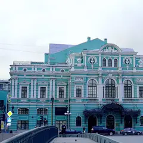

У метро · Центр
Куда сходить у метро «Сенная площадь»
Для 9 мест из нашего каталога ближайшая станция — «Сенная площадь» (Центр): 2 бара, 2 театра, 1 кофейня и 1 ресторан или кафе. Например, «Парадная с ротондой (дом Яковлева)», «Дом Флоу» и «БДТ им. Товстоногова». Недорогих, примерно до 1 500 ₽ на человека, — 5. 5 готовых планов проходят через эту станцию — например, «Ротонда и пышки», с маршрутом пешком между точками.
- 9 мест
- 5 планов
Места у метро «Сенная площадь» 8
Гороховая ул., 57
Новое
Круглая лестничная клетка с шестью колоннами, уходящими к куполу; стены исписаны пожеланиями гостей. Главный кадр — снизу вверх по оси колонн. Жилой дом: днём пускают за небольшое пожертвование, приходить тихо и небольшой компанией.
Подробнее и маршрут: Парадная с ротондой (дом Яковлева)Позвать сюда: Парадная с ротондой (дом Яковлева)
Фото: Artyom Svetlov, CC BY-SA 4.0 · Wikimedia Commons
Садовая ул., 21А
Новое
Кофейня на всех пяти этажах модернового дома 1903–1904 годов: лестница модерн, исторические окна, зелень на первом этаже и мини-оранжерея на втором.
Подробнее и маршрут: Дом ФлоуПозвать сюда: Дом Флоу
Фото здания: Артём Светлов, CC BY-SA 4.0 · Wikimedia Commons

наб. реки Фонтанки, 65
Новое
Один из главных драматических театров страны: смелые постановки и роскошный исторический зал.
Подробнее и маршрут: БДТ им. ТовстоноговаПозвать сюда: БДТ им. Товстоногова
Фото: GAlexandrova, CC BY-SA 4.0 · Wikimedia Commons
Казанская ул., 11
КруглосуточноНовое
Пиано-бар с живой музыкой у рояля и классическими коктейлями; по субботам и воскресеньям открыт до четырёх утра.
Подробнее и маршрут: Вчера и навсегдаПозвать сюда: Вчера и навсегда
Гороховая ул., 49Б
КруглосуточноНовое
Коктейльный бар в пространстве SENO у Сенной: авторские напитки с литературными отсылками, по выходным до четырёх утра.
Садовая ул., 32/1
Новое
Простая пышечная у Апраксина двора. Недорогой сладкий привал во время прогулки по центру.
Подробнее и маршрут: Пышечная на СадовойПозвать сюда: Пышечная на Садовой
наб. канала Грибоедова, 38
Новое
Камерный зал у канала: открытые микрофоны, «чёрный» стендап и выступления комиков из Петербурга и Москвы.
Подробнее и маршрут: Стендап-клуб на ГрибоедоваПозвать сюда: Стендап-клуб на Грибоедова
Садовая ул., 27
Новое
Небольшой театр на Садовой с камерным залом и сильными спектаклями молодых режиссёров.
Подробнее и маршрут: Приют комедиантаПозвать сюда: Приют комедианта


Готовые планы 5
- Парадная с ротондой (дом Яковлева) · Парадная с ротондой · м. Сенная площадь
- 6 минут пешкомПышечная на Садовой · Пышечная
Заглянуть в парадную с ротондой на Гороховой, а через пять минут пешком согреться пышками у Апраксина двора.
Открыть план: Ротонда и пышкиПозвать сюда: Ротонда и пышки
Фото: Artyom Svetlov, CC BY-SA 4.0 · Wikimedia Commons
- Парадная с ротондой (дом Яковлева) · Парадная с ротондой · м. Сенная площадь
- 9 минут пешкомДом Флоу · Кофейня в особняке модерн
Круглая лестница с колоннами до купола, потом кофе на пяти этажах особняка с оранжереей на Садовой.
Открыть план: Ротонда на Гороховой и кофе в доме модернПозвать сюда: Ротонда на Гороховой и кофе в доме модерн
Фото: Artyom Svetlov, CC BY-SA 4.0 · Wikimedia Commons
- Community Heroes · Компьютерный клуб · м. Сенная площадь
- 1 минута пешкомГорький · Коктейльный бар
Круглосуточный клуб у Сенной, а в соседнем пространстве SENO — коктейльный бар, где по выходным до четырёх утра.
Открыть план: Ночная катка у Сенной и коктейлиПозвать сюда: Ночная катка у Сенной и коктейли
- Стендап-клуб на Грибоедова · Стендап-клуб · м. Сенная площадь
- 2 минуты пешкомВчера и навсегда · Пиано-бар
Камерный стендап-зал у канала Грибоедова, а через пару минут — пиано-бар с живой музыкой у рояля.
Открыть план: Стендап у канала и пиано-барПозвать сюда: Стендап у канала и пиано-бар
- Terrassa · Ресторан · м. Невский проспект
- 5 минут пешкомВчера и навсегда · Пиано-бар
Ресторан на крыше у Казанского собора, а потом 5 минут пешком — пиано-бар с живой музыкой у рояля и классическими коктейлями.
Открыть план: Ужин на крыше и пиано-барПозвать сюда: Ужин на крыше и пиано-бар
Компьютерные клубы 1
Гороховая ул., 49
КруглосуточноНовое
Круглосуточный клуб у Сенной с солидной базой отзывов; есть подарочные сертификаты и доступ к играм по подписке.
Подробнее и маршрут: Community HeroesПозвать сюда: Community Heroes
Как позвать
- Выбери план, место или событие — в карточке адрес, цены и маршрут в Яндекс Картах.
- Нажми «Позвать сюда» — соберётся приглашение-игра для свидания или голосование для компании.
- Отправь ссылку в любой мессенджер: тебе ответят, а компания отметит, куда и когда может. Бесплатно и без регистрации.